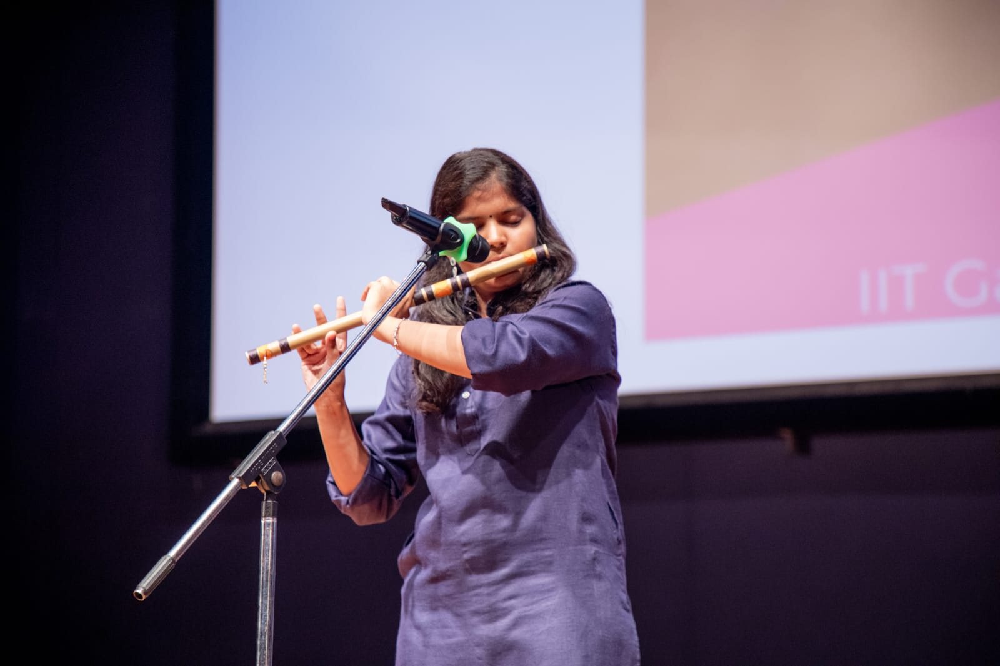
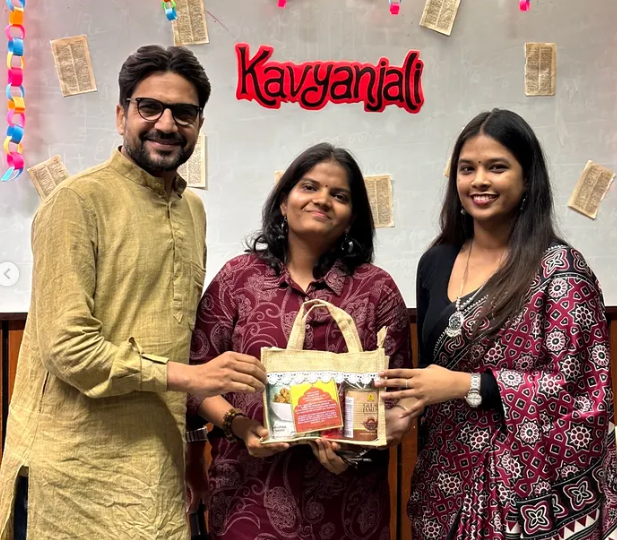
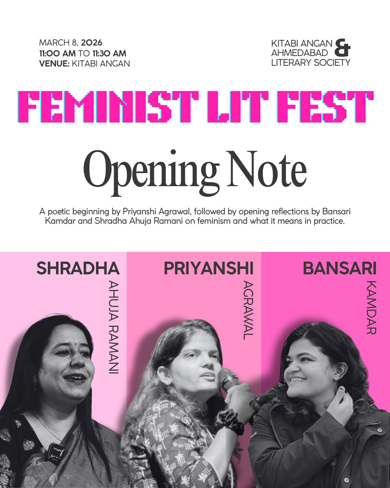

06 — Creative
What I do when I'm not proving things
Poetry is where it started. But I get restless, and I'll pick up almost anything with a learning curve.

blog

Read my poems →
A growing collection of my poetry. New pieces posted as I write them.
performance
Rap
I write and perform rap — same instinct as poetry, just with a beat under it.
music
Instruments
Self-taught on flute, guitar, harmonium, and kalimba. I love the learning almost as much as the playing.
puzzles
Speedcubing
I solve Rubik's cubes — including 2×2 and 3×3 blindfolded — plus a few other twisty puzzles.
craft
3D origami
Folding paper into modular 3D forms — a different kind of structure.
off duty
Reading & staying active
An avid reader, and a regular at the gym, the pool, and on a bicycle.

